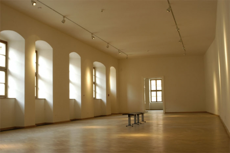

The Venue
The symposium will take place in the historical centre of Brno in the House of the Lords of Kunštát (Dům Pánů z Kunštátu). This arcaded palace comprises several buildings around central yard and it is one of a few well-preserved renaissance sights in Brno. The complex owned by The Brno House of Arts hosts a café in the yard and there are many nice restaurants and pubs around. Some of them offer nice food and most of them offer very good beer or wine. The House is within a walking distance from the bus and train stations.
Brno has an international airport, and it is accessible by direct trains from Prague (2.5 hours), Berlin (around 7 hours), Vienna (3 hours), or Bratislava (2 hours), …
Location of the venue on Google Maps
 The House of the Lords of Kunštát (Dům Pánů z Kunštátu)
Photo courtesy of The Brno House of Arts
The House of the Lords of Kunštát (Dům Pánů z Kunštátu)
Photo courtesy of The Brno House of Arts

The presentation hall
Photo courtesy of The Brno House of Arts
Design © TypeTalks, 2010–13.
Content © Respective speakers, 2010–13.